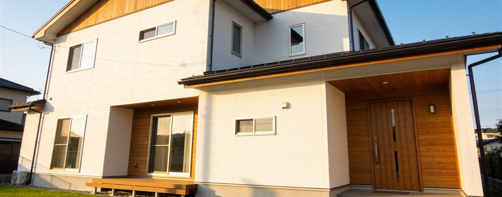

AI生成イメージ(Dreamina)
無料・登録不要
おうち探しノート
新築の土地選びから引っ越し後の暮らしまで、一歩ずつ。まずは住所を入れるだけで、その場所の防災ハザード(洪水・土砂災害・津波・高潮)を国の公式データで確認できます。
1住所を入力 または 地図をタップして場所を選ぶ
住所が分からなくても大丈夫です。下の地図を直接動かして、気になる場所をタップするだけでも確認できます。
2リスクを確認する
このツールについて
公式ハザードマップの色分けをそのまま重ねて見やすくしているだけで、「安全」「危険」といった独自の判定はしていません。実際の購入・建築の判断は、自治体の窓口や不動産・建築の専門家に確認しながら進めることをおすすめします。
あわせて確認したいこと
- 💰土地価格だけでなく、造成・地盤改良・擁壁・水道引込などを含めた総額で比較できているか
- 🏛️自治体の窓口で、用途地域・建ぺい率・容積率・建築条件を確認したか
- 🌦️晴天時だけでなく、雨天時や別の時間帯にも現地を見たか
みさき
引っ越しが決まったら、網戸・鍵・カーテンレールなど「入居後によくある困りごと」をサイズ・仕様で比較した記事もまとめています。良かったら覗いてみてください。
3お金を整理する
総額シミュレーター
土地価格だけで比べず、諸費用込みの総額とご予算を見比べられます。
あくまで概算の目安です。地盤改良・造成などは現地調査まで金額が確定しないことが多いので、分かった時点で少しずつ更新していくのがおすすめです。
住宅ローン返済シミュレーター(簡易)
元利均等返済・ボーナス返済なしの簡易計算です。実際の金利は固定/変動、金融機関、審査結果で変わります。「借りられる金額」と「無理なく返せる金額」は別物で、無理なく返せる目安は年収や他の借入状況によって金融機関ごとに基準が異なります。正確な借入可能額は金融機関の事前審査でご確認ください。
補助金について
みさき
国と自治体、それぞれに住宅関連の補助金制度があります。具体的な金額・対象・締切は年度や地域でよく変わるので、ここでは制度そのものを紹介するのではなく、公式情報への入り口だけ用意しています。
間取り・仕様の希望
一度入力すれば、家づくりカルテに保存され、質問リスト等でも参照します。
住宅会社の比較メモ
検討している会社をご自身で追加して比較できます(外部データベースとの連携はありません)。
見積チェックポイント
見積書の項目(1行1項目)を貼り付けると、確認した方がよい表現を自動で拾います(AIによる読み取りではなく、キーワード照合です)。会社名を入れて保存すると、下の比較表にたまっていきます。
4進捗を管理する
段階別チェックリスト
契約前・建築中・引渡し前で確認したい項目です。チェック状態は端末に保存されます。法律判断はしません(あくまで確認推奨事項です)。